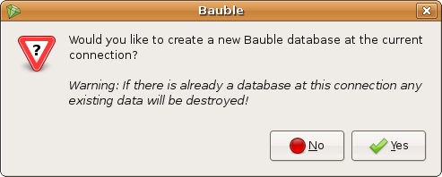

Using Bauble
For more information about getting started or installing Bauble see either Installing on Linux or Installing on Windows
This document is a work in progress.
- Connecting to a database
- Creating a new database
- Entering data
- Searching
- Creating reports
- Importing and exporting
- Writing plugins
Connecting to a database
When you start Bauble the first thing that comes up is the connection dialog.

Bauble allows you to connect to any existing database. If you connect to an empty database or a database not created or recognized by Bauble an error dialog will pop up.
Creating a new database
To create a new database you have to first connect to a database. This can either be done by selecting a filename for a SQLite database or by supplying connection parameters to a database server (Postgres, MySQL, etc.). If you need further help connecting to a database then see Connecting to a database
If you are connecting using a SQLite file based database then Bauble can handler everything that needs to be done to create a new database. If you are connecting to a server based database then you will have to manually create the database and permissions for the database while Bauble will create the tables and import the default data set. Creating a database on a server based database is beyond the scope of this manual. If you just got the chills or sick at your stomach I recommend you just stick with SQLite.
If you have connected to a database that has not yet been initialized by Bauble then you will get the following screenshot. Be careful because if you have entered the wrong connection parameters it is possible to overwrite an existing database at this connection.
If you are sure you want to create a database at this connection then select "Yes". Bauble will then start creating the database tables and importing the default data. This can take a minute or two so be patient.
Entering Data
There are two ways to enter data in Bauble. One way is from the Insert menu. The other is by right clicking on one of the results from the search and select Edit or Add.... Both do essentially the same thing but by right clicking on a search result and either adding new data or editing existing some of the relevant values may be already filled in for you when the editor opens.
Searching
One of the main goals for the design of Bauble was to be able to find what you want in your data quickly. Searching in Bauble consists of entering a search string in the entry field just below the menu. Pressing enter or clicking on the Search button should give you the results from your search.
You can be more specific about what you want in your results by using search keywords. Below is a list of keywords you can use to make your life easier in Bauble and a description of what they mean.
| Keywords | Description |
| family, fam | Search in family field of the the Family table |
| genus, gen | Search in the genus field of the Genus table |
| sp | Search in the sp field of the Species table |
| accession, acc | Search in the clode field of the Accessions table |
| plant | Search for an accession code combined with a plant code |
| location, loc | Search in the site field of the Location table |
| donor, don | Search in the name field of the Donor table |
The best way to explain how to use the keywords is by using an example. If you type fam=Orchidaceae in the search entry then Bauble will search for any family names in the database with the name Orchidaceae in them.
When searching for something there are a couple of things you should remember. Some of these may change in the future but for now (as of version 0.7.0) they are correct.
- Searches are case insensitive.
- To search for something with a space in it you should enclose the search string in quotes. e.g. loc="Orchid House"
- You can use the character * to search for everything. e.g. acc=* will give you all the accessions. Be careful when doing a search that will return thousands of results like gen=*. It can take a *really* long time to load 25,000+ generic names.
Advanced searching
It is possible to do more advanced searches in Bauble but these usually require a better understanding of the tables and table columns in the database. For example the query:
plant where accession.species.genus.genus=Ptychosperma and location.site="Block 14"
would return all of the plants whose genus is Ptychosperma and are located in "Block 14".
Creating Reports
Though Bauble does have an extremely powerful report/formatting system, it doesn't at the moment have a nice user interface for generating reports.
Bauble dumps the data that you have in your search results to Access to Biological Collection Data (ABCD) XML format, sends the data through an XSL processor using the stylesheet of your choice to generate PDF files. If this doesn't mean anything to you then you are better off avoiding the report system for the moment. Though fully functional, to use the reporting system would most likely require a technical background.
If you wish you can play with it from the Tools|Formatter menu.
Importing and Exporting
<to be done>
Writing plugins
<to be done>